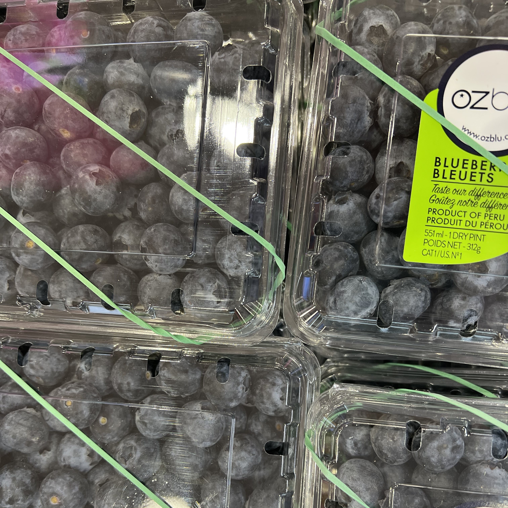

Eat fruits! Why? Because it benefits your body!
Most fruits are naturally low in fat, sugar, and calories. None of them have cholesterol. Fruits are sources of many essential nutrients that many people do not get enough of, such as folate, potassium, fiber, and vitamin C. There are hundreds of variety of fruits on the planet. However, there are more than forty kinds of fruits you can find in Toronto!
SEARCH by FRUIT TYPES
SEARCH by NUTRIENTS
COMMON FRUITS ↓
LEMON
Good hair care
Cure throat infection
Support heart health
Protect against anemia
Help control body weight
Stop internal blood bleeding
Treat from flu, cold, and fever
Cure respiratory problem such as asthma
Reduce cancer risk and digestion problems
Eliminate bad cholesterol and act as a blood purifier
[Nutrients: Calcium, Potassium, Vitamin C , Dietary fiber, Iron, Magnesium, Protein]
WATERMELON
Improve Digestion
Help Stay Hydrated
Reduce Risk of Certain Chronic Diseases
Reduce inflammation and oxidative stress
Relieve muscle soreness and help prevent macular degeneration
Support heart health by lowering blood pressure and cholesterol
[Nutrients: Potassium, Vitamin C, Calcium, Dietary fiber, Iron, Magnesium, Protein, Vitamin A]

BLUEBERRY
Protect cholesterol in blood
May help maintain eye health
Reduce muscle damage after strenuous exercise
Help maintain brain function and improve memory
May lower blood pressure and prevent heart disease
Have highest antioxidant capacity of all the popular fruits
Reduce DNA damage, which may help protect against aging and cancer
[Nutrients: Dietary fiber, Magnesium, Vitamin C, Vitamin K, Iron, Potassium, Protein]
GRAPE
Relieve constipation
Support bone health
Benefit eye, skin, and hair health
Protect against bacteria and fungi
Improve memory, attention, and mood
Slow signs of aging and promote longevity
Help lower blood pressure and reduce cholesterol
Protect against diabetes and lower blood sugar levels
May prevent the growth and spread of multiple types of cancer
[Nutrients: Copper, Vitamin K, Calcium, Dietary fiber, Iron, Magnesium, Potassium, Protein, Vitamin B-6, Vitamin C]
PEACH
Antioxidant benefits
Improve heart health
Have digestive benefits
Act as antioxidants and aid detoxification
Preserving Eyes, Skin, and Immune System
Smooth digestion and a lower risk of gut disorders
Limits the formation, growth, and spread of cancerous cells
[Nutrients: Vitamin A, Vitamin C, Dietary fiber, Manganese, Potassium, Protein, Vitamin E, Vitamin K]
BUY SOME FRUITS ONLINE! Choose a grocery store you prefer and purchase some fruits for yourself!
WALMART
METRO
T&T
FRESH CITY